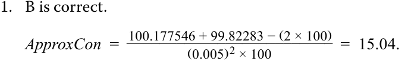

Learning Module 12 Yield-Based Bond Convexity and Portfolio Properties - Part 2: Portfolio Duration and Convexity
Volume 6: Fixed Income
Learning Module 12 Yield-Based Bond Convexity and Portfolio Properties
Part 2/2: Portfolio Duration and Convexity (PDF Pages 321–330)
Tập 6: Thu nhập Cố định (Fixed Income)
Học phần 12: Độ lồi Trái phiếu Dựa trên Lợi suất và Các Đặc tính Danh mục Đầu tư (Yield-Based Bond Convexity and Portfolio Properties)
Phần 2/2: Thời lượng và Độ lồi của Danh mục Đầu tư (Trang PDF 321–330)
| = 99.937. PV–= PRICE(DATE(2025,6,30),DATE(2032,6,30),0.0295,0.0294,100,2,0) = 100.063. |
|---|
| ApproxModDur=100.063 − 99.937 __ 2 ×(0.0001)× 100 = 6.283. |
| ApproxCon=100.063 + 99.937 −(2 × 100) ___ (0.0001) 2× 100 = 44.965. |
| 2. Calculate_MoneyDur_and_MoneyCon_for the bond position using the results from Question 1. Solution: MoneyDur≈ 6.283 × EUR10,000,000 = EUR62,829,180. MoneyCon≈ 44.965 × EUR10,000,000 = EUR449,647,660. |
| 3. Calculate the estimated price change in the investor’s position in the bond using_MoneyDur_and_MoneyCon_for a 50 bp decrease in yield-to-maturity. Solution: Δ_PV_Full≈ –(EUR62,829,180 × –0.005) + [½ × EUR449,647,660 × (–0.005)2] = EUR319,767. |
| 4. Calculate the difference between the estimated price change and the actual price change given a 50 bp yield-to-maturity decrease. Solution: PVFull= PRICE(DATE(2025,6,30),DATE(2032,6,30),0.0295,0.0345,100,2,0) = 103.198. The actual increase in the bond price is 3.1984%: Δ_PV_Full= 3.1984% × $10,000,000 = EUR319,840. |
| The difference between the actual and the estimated price change is EUR73 (= 319,840 – 319,767). |
- Tính $\text{MoneyDur}$ và $\text{MoneyCon}$ cho vị thế trái phiếu bằng cách sử dụng các kết quả từ Câu hỏi 1.
Lời giải:
PORTFOLIO DURATION AND CONVEXITY 4
- Tính mức thay đổi giá ước tính trong vị thế trái phiếu của nhà đầu tư bằng cách sử dụng $\text{MoneyDur}$ và $\text{MoneyCon}$ đối với mức giảm 50 bp trong lợi suất đáo hạn.
Lời giải:
- Tính chênh lệch giữa mức thay đổi giá ước tính và mức thay đổi giá thực tế khi lợi suất đáo hạn giảm 50 bp.
calculate portfolio duration and convexity and explain the limitations of these measures
Lời giải:
(Lưu ý: trong bản gốc ghi 0.0345 do lỗi đánh máy của giáo trình khi tính cho mức giảm 50 bp từ 0.0295, giá kết quả là 103.198)
Just as duration and convexity provide measures of the interest rate risk of a single bond, these metrics can also be used to measure the interest rate risk of a portfolio of bonds. There are two ways to calculate the duration and convexity of a bond portfolio:
Mức tăng thực tế trong giá trái phiếu là 3.1984%:
Chênh lệch giữa mức thay đổi giá thực tế và ước tính là 73 EUR ($= 319,840 - 319,767$).
THỜI LƯỢNG VÀ ĐỘ LỒI CỦA DANH MỤC ĐẦU TƯ (PORTFOLIO DURATION AND CONVEXITY) 4
1. Using the weighted average of time to receipt of the aggregate cash flows
- tính toán thời lượng và độ lồi của danh mục đầu tư (portfolio duration and convexity) và giải thích những hạn chế của các thước đo này
Cũng giống như thời lượng và độ lồi cung cấp các thước đo về rủi ro lãi suất của một trái phiếu đơn lẻ, các thước đo này cũng có thể được sử dụng để đo lường rủi ro lãi suất của một danh mục đầu tư trái phiếu. Có hai cách để tính thời lượng và độ lồi của một danh mục đầu tư trái phiếu:
1. Sử dụng trung bình có trọng số của thời gian nhận các dòng tiền gộp (aggregate cash flows)
2. Using the weighted averages of the durations and convexities of the individual bonds that make up the portfolio
2. Sử dụng trung bình có trọng số của thời lượng và độ lồi của từng trái phiếu riêng lẻ cấu thành nên danh mục đầu tư
The first method is the theoretically correct approach, but it is difficult to use in practice. Our focus will be the second method since it is commonly used by fixed-income portfolio managers. We will also highlight its limitations.
Phương pháp thứ nhất là phương pháp đúng về mặt lý thuyết, nhưng rất khó sử dụng trong thực tế. Trọng tâm của chúng ta sẽ là phương pháp thứ hai vì nó thường được các nhà quản lý danh mục đầu tư thu nhập cố định sử dụng. Chúng ta cũng sẽ làm nổi bật những hạn chế của nó.
Suppose an institutional investor holds a two-bond portfolio consisting of $50 million par value each of the BRWA five-year bond and a government of Romania 30-year bond, with details as shown in Exhibit 6. Assume that both bonds are denominated in US dollars.
Giả sử một nhà đầu tư định chế nắm giữ một danh mục đầu tư gồm hai trái phiếu với mệnh giá 50 triệu USD mỗi loại của trái phiếu BRWA kỳ hạn 5 năm và trái phiếu chính phủ Romania kỳ hạn 30 năm, với thông tin chi tiết như trong Bảng 6. Giả sử cả hai trái phiếu đều được định danh bằng đô la Mỹ (USD).
Exhibit 6: Inputs for Determining Portfolio Duration and Convexity
Bảng 6: Các Thông số Đầu vào để Xác định Thời lượng và Độ lồi của Danh mục Đầu tư (Exhibit 6: Inputs for Determining Portfolio Duration and Convexity)
| Maturity | Coupon | Yield | ||||
|---|---|---|---|---|---|---|
| Bond | (Years) | (%) | Price | (%) | Duration | Convexity |
| BRWA | 5 | 3.200 | 100.000 | 3.200 | 4.58676 | 24.23896 |
| Romania | 30 | 4.625 | 98.022 | 4.750 | 15.90637 | 369.64203 |
| Trái phiếu (Bond) | Kỳ hạn (Năm) (Maturity - Years) | Coupon (%) | Giá (Price) | Lợi suất (%) (Yield %) | Thời lượng (Duration) | Độ lồi (Convexity) |
|---|---|---|---|---|---|---|
| BRWA | 5 | 3.200 | 100.000 | 3.200 | 4.58676 | 24.23896 |
| Romania | 30 | 4.625 | 98.022 | 4.750 | 15.90637 | 369.64203 |
| Bond | Par Value | Market Value | Portfolio Weight |
|---|---|---|---|
| BRWA | 50,000,000 | 50,000,000 | 0.5050 |
| Romanian | 50,000,000 | 49,011,224 | 0.4950 |
| Trái phiếu (Bond) | Mệnh giá (Par Value) | Giá trị Thị trường (Market Value) | Trọng số Danh mục (Portfolio Weight) |
|---|---|---|---|
| BRWA | 50,000,000 | 50,000,000 | 0.5050 |
| Romania (Romanian) | 50,000,000 | 49,011,224 | 0.4950 |
The total market value for the portfolio is $99,011,224, and the portfolio is nearly evenly weighted in terms of market value between the two bonds. As noted previously, duration and convexity for a portfolio are calculated as the weighted average of the statistics for the individual bonds, with the shares of overall portfolio market value as the weights. This weighted average approximates the theoretically correct portfolio duration and convexity and becomes more accurate when differences in the yields-to-maturity on the bonds are smaller and when the yield curve is flat.
Tổng giá trị thị trường của danh mục đầu tư là $\$99,011,224$, và danh mục đầu tư được phân bổ trọng số gần như ngang nhau xét theo giá trị thị trường giữa hai trái phiếu. Như đã lưu ý trước đó, thời lượng và độ lồi của một danh mục đầu tư được tính bằng trung bình có trọng số của các số liệu thống kê của từng trái phiếu riêng lẻ, với tỷ trọng giá trị thị trường trong tổng danh mục đầu tư làm trọng số. Trung bình có trọng số này xấp xỉ với thời lượng và độ lồi của danh mục đầu tư đúng về mặt lý thuyết và trở nên chính xác hơn khi sự khác biệt về lợi suất đáo hạn giữa các trái phiếu nhỏ hơn và khi đường cong lợi suất phẳng (flat).
Given the portfolio weights in this simple example, portfolio duration and convexity are calculated as follows:
Với các trọng số danh mục đầu tư trong ví dụ đơn giản này, thời lượng và độ lồi của danh mục đầu tư được tính như sau:
Weighted-average modified duration = (4.58676 × 0.5050) + (15.90637 × 0.4950) = 10.19004.
Weighted-average convexity = (24.23896 × 0.5050) + (369.64203 × 0.4950) = 195.21581.
The main advantage of this weighted-average approach is that it is easily used as a measure of interest rate risk. For instance, if yields-to-maturity on each of the bonds in the portfolio increase by 100 bps, then the estimated decline in the portfolio value is 9.214%.
Ưu điểm chính của phương pháp trung bình có trọng số này là nó dễ dàng được sử dụng làm thước đo rủi ro lãi suất. Chẳng hạn, nếu lợi suất đáo hạn của mỗi trái phiếu trong danh mục đầu tư tăng 100 bps, thì mức sụt giảm ước tính trong giá trị danh mục đầu tư là 9.214%.
%∆ PVFull ≈ (–10.19004 × 0.0100) + [½ × 195.21581 × (0.0100)2 ] = –9.21396%.
However, this approach also comes with a limitation: These measures of portfolio duration and convexity implicitly assume that yields of all maturities change by the same amount in the same direction, a parallel shift in the yield curve. In reality, pure parallel shifts are rare; rather, we frequently observe a steepening, flattening, or even twisting yield curve.
Tuy nhiên, phương pháp này cũng đi kèm với một hạn chế: Các thước đo thời lượng và độ lồi của danh mục đầu tư này ngầm giả định rằng lợi suất của tất cả các kỳ hạn đều thay đổi cùng một lượng theo cùng một chiều, tức là một sự dịch chuyển song song (parallel shift) trong đường cong lợi suất. Trên thực tế, những sự dịch chuyển song song thuần túy rất hiếm khi xảy ra; thay vào đó, chúng ta thường xuyên quan sát thấy đường cong lợi suất dốc lên (steepening), phẳng ra (flattening), hoặc thậm chí xoắn lại (twisting).
EXAMPLE 2
VÍ DỤ 2 (EXAMPLE 2)
Portfolio Duration and Convexity
Thời lượng và Độ lồi của Danh mục Đầu tư (Portfolio Duration and Convexity)
An institutional investor considers adding a new USD50 million par value position in a 10-year US Treasury bond to its existing portfolio of BRWA and government of Romania bonds. The relevant data are shown in Exhibit 7.
Một nhà đầu tư định chế cân nhắc việc bổ sung một vị thế mới có mệnh giá 50 triệu USD bằng trái phiếu Kho bạc Hoa Kỳ (US Treasury bond) kỳ hạn 10 năm vào danh mục đầu tư hiện tại gồm trái phiếu BRWA và trái phiếu chính phủ Romania. Dữ liệu liên quan được thể hiện trong Bảng 7.
Exhibit 7: Inputs for Determining Portfolio Duration and Convexity
Bảng 7: Các Thông số Đầu vào để Xác định Thời lượng và Độ lồi của Danh mục Đầu tư (Exhibit 7: Inputs for Determining Portfolio Duration and Convexity)
| Bond | Maturity (Years) |
Coupon (%) |
Price | Yield (%) |
Duration | Convexity |
|---|---|---|---|---|---|---|
| BRWA | 5 | 3.200 | 100.000 | 3.200 | 4.58676 | 24.23896 |
| Romanian | 30 | 4.625 | 98.022 | 4.750 | 15.90637 | 369.64203 |
| US | 10 | 1.500 | 98.168 | 1.700 | 9.23693 | 93.87376 |
| Treasury |
| Trái phiếu (Bond) | Kỳ hạn (Năm) (Maturity - Years) | Coupon (%) | Giá (Price) | Lợi suất (%) (Yield %) | Thời lượng (Duration) | Độ lồi (Convexity) |
|---|---|---|---|---|---|---|
| BRWA | 5 | 3.200 | 100.000 | 3.200 | 4.58676 | 24.23896 |
| Romania (Romanian) | 30 | 4.625 | 98.022 | 4.750 | 15.90637 | 369.64203 |
| Kho bạc Hoa Kỳ (US Treasury) | 10 | 1.500 | 98.168 | 1.700 | 9.23693 | 93.87376 |
| Bond | Par Value (USD) | Market Value (USD) |
Portfolio Weight |
|---|---|---|---|
| BRWA | 50,000,000 | 50,000,000 | 0.33762 |
| Romania | 50,000,000 | 49,011,224 | 0.33094 |
| US | 50,000,000 | 49,083,948 | 0.33144 |
| Treasury |
| Trái phiếu (Bond) | Mệnh giá (USD) (Par Value) | Giá trị Thị trường (USD) (Market Value) | Trọng số Danh mục (Portfolio Weight) |
|---|---|---|---|
| BRWA | 50,000,000 | 50,000,000 | 0.33762 |
| Romania | 50,000,000 | 49,011,224 | 0.33094 |
| Kho bạc Hoa Kỳ (US Treasury) | 50,000,000 | 49,083,948 | 0.33144 |
- Calculate the weighted-average duration and convexity for the proposed portfolio.
- Tính thời lượng và độ lồi trung bình có trọng số cho danh mục đầu tư đề xuất.
Solution:
Lời giải:
Given the data in Exhibit 7, the weighted-average modified duration and convexity are calculated as follows:
Với dữ liệu trong Bảng 7, thời lượng điều chỉnh và độ lồi trung bình có trọng số được tính như sau:
Weighted-average modified duration = (4.58676 × 0.33762) + (15.90637 × 0.33094) + (9.23693 × 0.33144)
= 9.87415.
Weighted-average convexity = (24.23896 × 0.33762) + (369.64203 × 0.33094) + (93.87376 × 0.33144)
= 161.62749.
- Compare and interpret duration and convexity for the proposed portfolio versus the current portfolio.
- So sánh và diễn giải thời lượng và độ lồi của danh mục đầu tư đề xuất so với danh mục đầu tư hiện tại.
Solution:
Lời giải:
Adding the US Treasury position would decrease both the portfolio duration (from 10.19004 to 9.87415) and convexity (from 195.21581 to 161.62749). The reduction in duration would reduce the price risk of the portfolio against an upward parallel shift in the yield curve, but due to the lower convexity, this reduction in risk would be lessened for large shifts.
Việc bổ sung vị thế trái phiếu Kho bạc Hoa Kỳ sẽ làm giảm cả thời lượng của danh mục đầu tư (từ 10.19004 xuống 9.87415) và độ lồi (từ 195.21581 xuống 161.62749). Việc giảm thời lượng sẽ làm giảm rủi ro giá của danh mục đầu tư trước sự dịch chuyển song song đi lên của đường cong lợi suất, nhưng do độ lồi thấp hơn, mức giảm rủi ro này sẽ bị thu hẹp đối với những dịch chuyển lớn.
- Recommend whether the US Treasury bond position should be added if the investor expects a 100 bp parallel shift downward in yields.
- Khuyến nghị xem có nên bổ sung vị thế trái phiếu Kho bạc Hoa Kỳ hay không nếu nhà đầu tư kỳ vọng lợi suất dịch chuyển song song đi xuống 100 bp.
Solution:
Lời giải:
Given an expected 100 bp parallel shift down in yields, the investor should not add the position in US Treasury bonds. Adding the position lowers both the portfolio duration and convexity, which would also reduce the expected increase in the value of the portfolio. Given the investor’s yield curve view, it should seek to increase both portfolio duration and convexity.
Với kỳ vọng lợi suất dịch chuyển song song đi xuống 100 bp, nhà đầu tư không nên bổ sung vị thế trái phiếu Kho bạc Hoa Kỳ. Việc bổ sung vị thế này làm giảm cả thời lượng và độ lồi của danh mục đầu tư, điều này cũng sẽ làm giảm mức tăng kỳ vọng trong giá trị của danh mục đầu tư. Với quan điểm về đường cong lợi suất của nhà đầu tư, họ nên tìm cách tăng cả thời lượng và độ lồi của danh mục đầu tư.
QUESTION SET
BỘ CÂU HỎI (QUESTION SET)
Questions 1–4 relate to the following information.
Các câu hỏi 1–4 liên quan đến thông tin sau đây.
An investor purchases EUR10 million par value of a 5-year, zero-coupon bond and a 10-year, fixed-rate semiannual coupon bond. Details of the bonds are shown below.
Một nhà đầu tư mua 10 triệu EUR mệnh giá của mỗi loại gồm một trái phiếu không trả lãi định kỳ kỳ hạn 5 năm và một trái phiếu trả lãi coupon bán niên cố định kỳ hạn 10 năm. Chi tiết về các trái phiếu được thể hiện dưới đây.
Two-Bond Portfolio
Danh mục Đầu tư Hai Trái phiếu (Two-Bond Portfolio)
| Bond | Maturity (Years) |
Coupon (%) | Price | YTM (%) | Duration | Convexity |
|---|---|---|---|---|---|---|
| Zero | 5 | 0.00 | 83.18777 | 3.750 | 4.81928 | 27.87052 |
| Semi- annual | 10 | 5.50 | 105.91556 | 4.750 | 7.71210 | 72.54897 |
| Trái phiếu (Bond) | Kỳ hạn (Năm) (Maturity - Years) | Coupon (%) | Giá (Price) | YTM (%) | Thời lượng (Duration) | Độ lồi (Convexity) |
|---|---|---|---|---|---|---|
| Không trả lãi định kỳ (Zero) | 5 | 0.00 | 83.18777 | 3.750 | 4.81928 | 27.87052 |
| Bán niên (Semi-annual) | 10 | 5.50 | 105.91556 | 4.750 | 7.71210 | 72.54897 |
- Calculate the weighted-average modified duration for the portfolio.
- Tính thời lượng điều chỉnh trung bình có trọng số cho danh mục đầu tư.
Solution:
Lời giải:
The market value of the bonds are as follows:
Giá trị thị trường của các trái phiếu như sau:
Zero-coupon: €10,000,000 × 83.18777/100 = €8,318,777.
Semi-annual: €10,000,000 × 105.91556/100 = €10,591,556.
-
Trái phiếu không trả lãi định kỳ (Zero-coupon): $€10,000,000 \times 83.18777/100 = €8,318,777$.
-
Trái phiếu bán niên (Semi-annual): $€10,000,000 \times 105.91556/100 = €10,591,556$.
Therefore, the weights are 43.991% for the zero-coupon bond and 56.009% for the semi-annual bond. As a result, the weighted-average modified duration is
Do đó, trọng số là 43.991% đối với trái phiếu không trả lãi định kỳ và 56.009% đối với trái phiếu bán niên. Kết quả là, thời lượng điều chỉnh trung bình có trọng số là
- (4.81928 × 0.43991) + (7.71210 × 0.56009) = 6.43953.
- Calculate the weighted-average convexity for the portfolio.
Solution:
- Tính độ lồi trung bình có trọng số cho danh mục đầu tư.
Using the weights calculated previously,
Lời giải:
Weighted-average convexity = (27.87052 × 0.43991) + (72.54897 × 0.56009)
= 52.89463.
Sử dụng các trọng số đã tính trước đó,
- Calculate the estimated percentage price change of the portfolio given a 100 bp increase in yield-to-maturity on each of the bonds.
-
Solution:
-
%∆ PVFull ≈ (–6.43953 × 0.0100) + [½ × 52.89463 × (0.0100)2 ] = –6.1751%.
- Tính phần trăm thay đổi giá ước tính của danh mục đầu tư khi lợi suất đáo hạn của mỗi trái phiếu tăng 100 bp.
- Lời giải:
- Based on rising inflation and tightening monetary policy, the investor expects interest rates to rise. Given that view, which bond should the investor consider replacing the 10-year bond with?
A. A 20-year bond B. A 15-year floating-rate bond
- Dựa trên lạm phát gia tăng và chính sách tiền tệ thắt chặt, nhà đầu tư kỳ vọng lãi suất sẽ tăng. Với quan điểm đó, nhà đầu tư nên cân nhắc thay thế trái phiếu kỳ hạn 10 năm bằng trái phiếu nào?
- A. Một trái phiếu kỳ hạn 20 năm
- B. Một trái phiếu lãi suất thả nổi kỳ hạn 15 năm
-
C. Một trái phiếu kỳ hạn 10 năm có lãi suất coupon thấp hơn
-
Lời giải:
-
C. A 10-year bond with a lower coupon
-
Solution:
B is correct. With interest rates expected to rise, the investor should choose a bond with lower interest rate risk. Both the 20-year bond and the 10-year bond with a lower coupon should have higher durations than the current 10-year bond, all else equal, and would be expected to experience a larger percentage price decrease if interest rates increase. Floating-rate bonds, however, have low interest rate risk because coupon payments adjust to changing interest rates.
B là đáp án đúng. Khi lãi suất được kỳ vọng sẽ tăng, nhà đầu tư nên chọn một trái phiếu có rủi ro lãi suất thấp hơn. Cả trái phiếu kỳ hạn 20 năm và trái phiếu kỳ hạn 10 năm có lãi suất coupon thấp hơn đều sẽ có thời lượng cao hơn so với trái phiếu kỳ hạn 10 năm hiện tại, khi các yếu tố khác không đổi, và dự kiến sẽ chịu mức sụt giảm phần trăm giá lớn hơn nếu lãi suất tăng. Tuy nhiên, trái phiếu lãi suất thả nổi lại có rủi ro lãi suất thấp vì các khoản thanh toán coupon sẽ điều chỉnh theo sự thay đổi của lãi suất.
~~PRACTICE PROBLEMS~~
BÀI TẬP THỰC HÀNH (PRACTICE PROBLEMS)
1. A 5.5% semiannual-pay fixed-coupon bond is issued at par on 1 May 2025 and matures on 1 May 2029. For a 50 bps increase and decrease in yield-to-maturity, PV + and PV – are 99.82283 and 100.177546, respectively. The approximate convexity is closest to:
1. Một trái phiếu trả lãi coupon cố định bán niên 5.5% được phát hành ngang mệnh giá vào ngày 1 tháng 5 năm 2025 và đáo hạn vào ngày 1 tháng 5 năm 2029. Đối với mức tăng và giảm 50 bps trong lợi suất đáo hạn, $PV_+$ và $PV_-$ lần lượt là 99.82283 và 100.177546. Độ lồi xấp xỉ gần nhất với:
- A. 3.548.
B. 15.045.
-
A. 3.548.
-
B. 15.045.
-
C. 101.793.
- C. 101.793.
2. Một trái phiếu trả lãi coupon cố định bán niên là 4.70%. Nó giao dịch ngang mệnh giá vào ngày trả coupon là ngày 16 tháng 12 năm 2025 và đáo hạn vào ngày 16 tháng 12 năm 2033. Số liệu thống kê độ lồi năm hóa của trái phiếu gần nhất với:
2. A bond pays a semiannual fixed coupon of 4.70%. It trades at par on its coupon date of 16 December 2025 and matures on 16 December 2033. The bond’s annualized convexity statistic is closest to:
-
A. 51.670.
-
B. 53.231.
-
C. 206.681.
-
A. 51.670.
-
B. 53.231.
-
C. 206.681.
3. For changes in yield-to-maturity, the convexity adjustment is most needed to account for the:
3. Đối với những thay đổi trong lợi suất đáo hạn, phần điều chỉnh độ lồi là cần thiết nhất để tính đến:
-
A. first-order effect on bond prices.
-
B. bond price risk due to small changes in yield-to-maturity.
-
C. non-linear relationship of bond prices and yield to maturity.
-
A. tác động bậc nhất lên giá trái phiếu.
-
B. rủi ro giá trái phiếu do những thay đổi nhỏ trong lợi suất đáo hạn.
-
C. mối quan hệ phi tuyến tính giữa giá trái phiếu và lợi suất đáo hạn.
The following information relates to questions 4-9
Thông tin sau đây liên quan đến các câu hỏi 4–9
A bond portfolio consists of the following three option-free, fixed-rate bonds:
Một danh mục đầu tư trái phiếu bao gồm ba trái phiếu lãi suất cố định, không kèm quyền chọn sau đây:
| Bond | Market Value (£) | Annual Modified Duration | Annual Convexity |
|---|---|---|---|
| X | 5,000,000 | 3.6239 | 16.2513 |
| Y | 5,000,000 | 9.0036 | 91.0278 |
| Z | 10,000,000 | 12.7512 | 179.8591 |
| Trái phiếu (Bond) | Giá trị Thị trường (£) (Market Value) | Thời lượng Điều chỉnh Hàng năm (Annual Modified Duration) | Độ lồi Hàng năm (Annual Convexity) |
|---|---|---|---|
| X | 5,000,000 | 3.6239 | 16.2513 |
| Y | 5,000,000 | 9.0036 | 91.0278 |
| Z | 10,000,000 | 12.7512 | 179.8591 |
4. If the yield-to-maturity of Bond X increases by 50 bps, the expected percentage price change of Bond X is closest to:
4. Nếu lợi suất đáo hạn của Trái phiếu X tăng 50 bps, phần trăm thay đổi giá kỳ vọng của Trái phiếu X gần nhất với:
-
A. 1.792%.
-
B. 1.812%.
-
C. 1.832%.
-
A. 1.792%.
-
B. 1.812%.
-
C. 1.832%.
5. Given a 75 bps change in the yields-to-maturity for Bonds Y and Z, the convexity adjustment for Bond Z would be greater than the convexity adjustment of Bond
5. Với mức thay đổi 75 bps trong lợi suất đáo hạn của Trái phiếu Y và Z, phần điều chỉnh độ lồi của Trái phiếu Z sẽ lớn hơn phần điều chỉnh độ lồi của Trái phiếu
Y:
Y:
-
A. if the YTM change is positive.
-
B. if the YTM change is negative.
-
C. regardless of the direction of the change in YTM.
-
A. nếu mức thay đổi YTM là số dương.
-
B. nếu mức thay đổi YTM là số âm.
-
C. bất kể chiều hướng thay đổi của YTM.
6. For a 100 bps increase in yield-to-maturity and using money duration and money convexity, the estimated change in Bond Y’s full price is closest to:
-
A. GBP472,937.
-
B. GBP450,180.
-
C. GBP427,423.
6. Đối với mức tăng 100 bps trong lợi suất đáo hạn và sử dụng thời lượng tiền tệ cùng độ lồi tiền tệ, mức thay đổi ước tính trong giá toàn phần của Trái phiếu Y gần nhất với:
7. For a 100 bps increase in yield-to-maturity and using the weighted average duration and convexity, the expected percentage price change for the bond portfolio is closest to:
-
A. 472,937 GBP.
-
B. 450,180 GBP.
-
C. 427,423 GBP.
A. 7.981%.
7. Đối với mức tăng 100 bps trong lợi suất đáo hạn và sử dụng thời lượng và độ lồi trung bình có trọng số, phần trăm thay đổi giá kỳ vọng của danh mục đầu tư trái phiếu gần nhất với:
- B. 8.949%.
-
A. 7.981%.
-
B. 8.949%.
-
C. 9.533%.
C. 9.533%.
8. Chuẩn tham chiếu (benchmark) của danh mục đầu tư trái phiếu là một chỉ số thu nhập cố định có thời lượng là 9.5325 và độ lồi là 103.0677. Dựa trên thời lượng và độ lồi trung bình có trọng số của danh mục đầu tư, danh mục đầu tư sẽ có thành quả vượt trội hơn chuẩn tham chiếu của nó trong kịch bản nào sau đây?
8. The bond portfolio’s benchmark is a fixed-income index with a duration of 9.5325 and convexity of 103.0677. Based on the weighted-average portfolio duration and convexity, the portfolio should outperform its benchmark in which of the following scenarios?
-
A. Only when interest rates are rising
-
B. Only when interest rates are falling
-
C. Both when interest rates are rising and falling
-
A. Chỉ khi lãi suất đang tăng
-
B. Chỉ khi lãi suất đang giảm
-
C. Cả khi lãi suất đang tăng và đang giảm
9. The method of using weighted-average portfolio duration and convexity measures to assess price risk of a bond portfolio is best characterized as:
9. Phương pháp sử dụng các thước đo thời lượng và độ lồi trung bình có trọng số của danh mục đầu tư để đánh giá rủi ro giá của một danh mục đầu tư trái phiếu được mô tả đúng nhất là:
-
A. being theoretically correct.
-
B. being commonly used by portfolio managers.
-
C. accommodating non-parallel shifts in the yield curve.
-
A. đúng về mặt lý thuyết.
-
B. thường được sử dụng bởi các nhà quản lý danh mục đầu tư.
-
C. tính đến được những sự dịch chuyển không song song (non-parallel shifts) trong đường cong lợi suất.
~~SOLUTIONS~~
LỜI GIẢI (SOLUTIONS)

- A is correct.
- B là đáp án đúng.
- A là đáp án đúng.
Eight-Year, 4.70% Semiannual Bond
Trái phiếu Bán niên 4.70%, Kỳ hạn 8 Năm (Eight-Year, 4.70% Semiannual Bond)
| Fixed Coupon (%) | 4.70 |
|---|---|
| Periods p.a. | 2 |
| Price (per 100 Par Value) | 100 |
| Yield-to-Maturity (%) | 4.70 |
| Đặc điểm | Giá trị |
|---|---|
| Lãi suất Coupon Cố định (%) (Fixed Coupon %) | 4.70 |
| Số kỳ mỗi năm (Periods p.a.) | 2 |
| Giá (trên 100 Mệnh giá) (Price per 100 Par Value) | 100 |
| Lợi suất Đáo hạn (%) (Yield-to-Maturity %) | 4.70 |
| Col. 1 | Col. 2 | Col. 3 | Col. 4 | Col. 5 | Col. 6 = Col. 2 × Col. 5 |
Col. 7 = Col. 2 × (Col. 2 + 1) × Col. 5 × (1 + YTM/2)–2 |
|---|---|---|---|---|---|---|
| Period | Time to Receipt |
Cash Flow | Present Value | Weight | Time to Receipt × Weight |
Convexity of Cash Flows |
| 1 | 1.0 | 2.35 | 2.296043 | 0.02296 | 0.02296 | 0.04384 |
| 2 | 2.0 | 2.35 | 2.243325 | 0.02243 | 0.04487 | 0.12849 |
| 3 | 3.0 | 2.35 | 2.191817 | 0.02192 | 0.06575 | 0.25108 |
| 4 | 4.0 | 2.35 | 2.141492 | 0.02141 | 0.08566 | 0.40886 |
| 5 | 5.0 | 2.35 | 2.092323 | 0.02092 | 0.10462 | 0.59920 |
| 6 | 6.0 | 2.35 | 2.044282 | 0.02044 | 0.12266 | 0.81962 |
| 7 | 7.0 | 2.35 | 1.997344 | 0.01997 | 0.13981 | 1.06774 |
| 8 | 8.0 | 2.35 | 1.951484 | 0.01951 | 0.15612 | 1.34129 |
| 9 | 9.0 | 2.35 | 1.906677 | 0.01907 | 0.17160 | 1.63811 |
| 10 | 10.0 | 2.35 | 1.862899 | 0.01863 | 0.18629 | 1.95617 |
| 11 | 11.0 | 2.35 | 1.820126 | 0.01820 | 0.20021 | 2.29351 |
| 12 | 12.0 | 2.35 | 1.778336 | 0.01778 | 0.21340 | 2.64827 |
| 13 | 13.0 | 2.35 | 1.737504 | 0.01738 | 0.22588 | 3.01871 |
| 14 | 14.0 | 2.35 | 1.697610 | 0.01698 | 0.23767 | 3.40315 |
| 15 | 15.0 | 2.35 | 1.658632 | 0.01659 | 0.24879 | 3.80002 |
| 16 | 16.0 | 102.35 | 70.580104 | 0.70580 | 11.29282 | 183.26330 |
| 100.0000 | 1.00000 | 13.51910 | 206.68136 | |||
| Annualize | d Convexity | 51.67034 |
| Cột 1 | Cột 2 | Cột 3 | Cột 4 | Cột 5 | Cột 6 = Cột 2 × Cột 5 | Cột 7 = Cột 2 × (Cột 2 + 1) × Cột 5 × (1 + YTM/2)⁻² |
|---|---|---|---|---|---|---|
| Kỳ (Period) | Thời gian nhận (Time to Receipt) | Dòng tiền (Cash Flow) | Giá trị hiện tại (Present Value) | Trọng số (Weight) | Thời gian nhận × Trọng số (Time to Receipt × Weight) | Độ lồi của Dòng tiền (Convexity of Cash Flows) |
| 1 | 1.0 | 2.35 | 2.296043 | 0.02296 | 0.02296 | 0.04384 |
| 2 | 2.0 | 2.35 | 2.243325 | 0.02243 | 0.04487 | 0.12849 |
| 3 | 3.0 | 2.35 | 2.191817 | 0.02192 | 0.06575 | 0.25108 |
| 4 | 4.0 | 2.35 | 2.141492 | 0.02141 | 0.08566 | 0.40886 |
| 5 | 5.0 | 2.35 | 2.092323 | 0.02092 | 0.10462 | 0.59920 |
| 6 | 6.0 | 2.35 | 2.044282 | 0.02044 | 0.12266 | 0.81962 |
| 7 | 7.0 | 2.35 | 1.997344 | 0.01997 | 0.13981 | 1.06774 |
| 8 | 8.0 | 2.35 | 1.951484 | 0.01951 | 0.15612 | 1.34129 |
| 9 | 9.0 | 2.35 | 1.906677 | 0.01907 | 0.17160 | 1.63811 |
| 10 | 10.0 | 2.35 | 1.862899 | 0.01863 | 0.18629 | 1.95617 |
| 11 | 11.0 | 2.35 | 1.820126 | 0.01820 | 0.20021 | 2.29351 |
| 12 | 12.0 | 2.35 | 1.778336 | 0.01778 | 0.21340 | 2.64827 |
| 13 | 13.0 | 2.35 | 1.737504 | 0.01738 | 0.22588 | 3.01871 |
| 14 | 14.0 | 2.35 | 1.697610 | 0.01698 | 0.23767 | 3.40315 |
| 15 | 15.0 | 2.35 | 1.658632 | 0.01659 | 0.24879 | 3.80002 |
| 16 | 16.0 | 102.35 | 70.580104 | 0.70580 | 11.29282 | 183.26330 |
| 100.0000 | 1.00000 | 13.51910 | 206.68136 | |||
| Độ lồi Năm hóa (Annualized Convexity) | 51.67034 |
-
C is correct. The convexity adjustment is a complementary risk measure to duration. It accounts for the second-order (non-linear) effect of yield changes on price. It is most useful for large yield changes, because duration provides a good approximation for small yield changes.
-
A is correct. The expected price change is calculated as follows:
- %Δ PVFull ≈ (–3.6239 × 0.005) + [½ × 16.2513 × (0.005)2 ]
-
C là đáp án đúng. Phần điều chỉnh độ lồi là một thước đo rủi ro bổ sung cho thời lượng. Nó tính đến tác động bậc hai (phi tuyến tính) của những thay đổi lợi suất lên giá. Nó hữu ích nhất đối với những thay đổi lợi suất lớn, bởi vì thời lượng đã cung cấp một phép xấp xỉ tốt cho những thay đổi lợi suất nhỏ.
-
A là đáp án đúng. Mức thay đổi giá kỳ vọng được tính như sau:
= –1.79164% ≈ –1.792%.
-
C is correct. Since the convexity adjustment uses the square of the change in yield, it is always positive regardless of the direction of the change in yield-to-maturity. As a result, the convexity adjustment for Bond Z will always be greater than the convexity adjustment for Bond Y, given the same change in yields-to-maturity.
-
C is correct.
-
C là đáp án đúng. Vì phần điều chỉnh độ lồi sử dụng bình phương của mức thay đổi lợi suất, nên nó luôn mang giá trị dương bất kể chiều hướng thay đổi của lợi suất đáo hạn. Do đó, phần điều chỉnh độ lồi của Trái phiếu Z sẽ luôn lớn hơn phần điều chỉnh độ lồi của Trái phiếu Y, khi có cùng một mức thay đổi trong lợi suất đáo hạn.
-
C là đáp án đúng.
MoneyDur ≈ 9.0036 × 5,000,000 = 45,018,000
MoneyCon ≈ 91.0278 × 5,000,000 = 455,139,000
Δ PVFull ≈ –(45,018,000 × 0.01) + [½ × 455,139,000 × (0.01)2 ] = –GBP427,423.
- B is correct. The portfolio weights for Bonds X, Y, and Z are 0.25, 0.25, and 0.50, respectively. The weighted average duration and convexity measures are calculated as follows:
- B là đáp án đúng. Trọng số danh mục đầu tư cho các Trái phiếu X, Y và Z lần lượt là 0.25, 0.25 và 0.50. Các thước đo thời lượng và độ lồi trung bình có trọng số được tính như sau:
Weighted-average duration = (0.25 × 3.6239) + (0.25 × 9.0036) + (0.50 × 12.7512) = 9.5325.
Weighted-average convexity = (0.25 × 16.2513) + (0.25 × 91.0278) + (0.50 × 179.8591)
= 116.7493.
%Δ PVFull ≈ (–9.5325 × 0.01) + [½ × 116.7493 × (0.01)2 ] = –8.9487% ≈ –8.949%.
-
C is correct. The portfolio has a weighted-average duration of 9.5325, which is identical to the benchmark’s duration. However, the portfolio has higher convexity (116.7493) compared to the benchmark (103.0677). All else equal, the portfolio should outperform the lower convexity benchmark portfolio in both rising and falling interest rate environments.
-
B is correct. The weighted-average portfolio duration and convexity method is easy to calculate and apply in practice and is commonly used by portfolio managers to assess bond portfolio price risk. It does, however, implicitly assume parallel shifts in the yield curve. Using the weighted average of time to receipt of the aggregate cash flows is the theoretically correct method to calculate portfolio duration and convexity, but it is difficult to use in practice.
-
C là đáp án đúng. Danh mục đầu tư có thời lượng trung bình có trọng số là 9.5325, giống hệt với thời lượng của chuẩn tham chiếu. Tuy nhiên, danh mục đầu tư có độ lồi cao hơn (116.7493) so với chuẩn tham chiếu (103.0677). Khi các yếu tố khác không đổi, danh mục đầu tư sẽ có thành quả vượt trội hơn danh mục chuẩn tham chiếu có độ lồi thấp hơn trong cả môi trường lãi suất tăng và giảm.
-
B là đáp án đúng. Phương pháp thời lượng và độ lồi trung bình có trọng số của danh mục đầu tư rất dễ tính toán và áp dụng trong thực tế và thường được các nhà quản lý danh mục đầu tư sử dụng để đánh giá rủi ro giá của danh mục đầu tư trái phiếu. Tuy nhiên, phương pháp này ngầm giả định sự dịch chuyển song song trong đường cong lợi suất. Việc sử dụng trung bình có trọng số của thời gian nhận các dòng tiền gộp là phương pháp đúng về mặt lý thuyết để tính thời lượng và độ lồi của danh mục đầu tư, nhưng rất khó sử dụng trong thực tế.